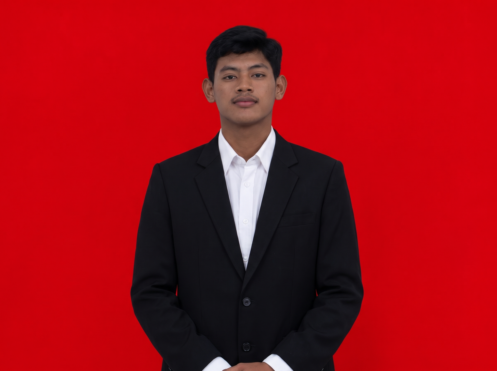

Berawal dari rasa penasaran terhadap cara kerja sistem informasi, sekarang menjadi passion. Saya suka mengeksplorasi pengembangan web modern, manajemen basis data, dan merancang aplikasi fungsional yang nyaman digunakan.
WEB
DEVELOPER

AHMAD YARDAN A.
Information Systems
CONNECT OUR SOSMED
AHMAD YARDAN ALIM AL HAIDI
github.com/aalkepo88-design
Ahmad Yardan
Sistem Informasi USG
Saya adalah mahasiswa Sistem Informasi di Universitas Sunan Gresik yang berfokus pada pengembangan aplikasi web fungsional sekaligus menarik secara visual.
Dengan HTML, Tailwind CSS, JavaScript, dan Supabase, saya mengubah kebutuhan administrasi maupun ide digital menjadi sistem web yang responsif, terstruktur, dan siap pakai.
S1 Sistem Informasi
Gresik, Jawa Timur • Aktif
Himpunan Mahasiswa Sistem Informasi
Pengembangan Sistem & Kegiatan Organisasi
Sistem informasi peminjaman inventaris dan ruangan kampus dengan portal mahasiswa, persetujuan admin, manajemen stok real-time, dan ekspor laporan Excel.
Aplikasi berbasis web untuk pelaporan serta pencarian barang hilang dan temuan secara terpusat, dilengkapi fitur unggah foto dan filter kategori.
Implementasi pemodelan ERD, skema relasional MySQL, serta pengembangan aplikasi berorientasi objek menggunakan Java dan analisis data Python.
Ada yang mau didiskusikan atau kolaborasi proyek? Langsung kirim pesan di sini.